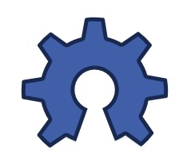

Skycube
{kind=link}
Contenido
[ocultar]Introducción
Tarjeta microcontroladora para ser integrada en los Módulos Y1 o Módulos MY y construir robots modulares autónomos.
La tarjeta Skycube es hardware libre2. Ha sido diseñado con la herramienta libre Kicad.
{kind=link}
{kind=link}
Características
- Microprocesador: PIC16F876A a 20Mhz
- Conexión de hasta 8 servos (8 módulos).
- 4 conectores de servos por cada cara, para facilitar el cableado
- Comunicación por bus I2C entre tarjetas Skycube.
- Conector de I2C doble, uno por cada cara, para facilitar la interconexión
- Conector de alimentación doble, tipo molex, uno por cada cara
- Conector de grabación ICSP
- Led de pruebas
- Botón de pruebas
- Micro-interruptor de on/off
- Led de power-on
- Slot de expansión para conectar sensores
- Pines de TX y RX accesibles mediante un conector. Muy útil para descargar firmware usando un bootloader
Conexión al PC
{kind=link}
{kind=link}
La Skycube 1.0 se conecta al PC a través del USB utilizando el cable USB-serie de FTDI. El modelo es el TTL-232R-5V. Este cable tiene un conector de 6 pines. Para usarlo con la Skycube es necesario modificar el cable y sustituir este conector por uno de 3 pines.
Este cable sirva para descargar firmware en la Skycube, así como comunicarse vía puerto serie con ella para telecontrolar los robots modulares desde el PC
| Instrucciones para la construcción del cable |
{kind=link}
Alimentación
La Skycube se alimenta entre 4.5 y 6 voltios a través de un conector molex de 2 vías. Dispone de 2 conectores molex para alimentarla, uno en la cara superior y otro en la inferior. De esta manera, el usuario puede elegir el que más cómodo le resulte. Tener estos dos conectores es especialmente útil para facilitar el cableado del bus de alimentación, en el caso de interconectarse 2 ó mas Skycubes.
Portapilas
{kind=link}
{kind=link}
Para alimentar la skycube se puede utilizar un portapilas de 4 pilas AAA. Tiene el tamaño exacto para ser integrado en los Módulos Y1 ó Módulos MY.
| Instrucciones de montaje del portapilas |
Planos
- Ficheros FUENTE y de fabricación:
| skycube-1.0-r109.zip | Ficheros fuentes para Kicad: Esquemas, librerias y PCB |
| skycube-1.0-fabricacion.zip | Ficheros para su fabricación: Gerbers y plano de taladros |
- Ficheros con documentación en PDF:
| skycube-esquema.pdf | Esquema |
| skycube-PCB-bottom.pdf | PCB. Cara inferior |
| skycube-PCB-top.pdf | PCB. Cara superior |
| skycube-serigrafia-Top.pdf | Serigrafías cara superior |
| skycube-serigrafia-bottom.pdf | Serigrafías cara inferior |
| skycube-componentes.pdf | Listado de componentes |
Fotos
Skycube 1.0. Versión industrial
{kind=link}
{kind=link}
{kind=link}
Segundo prototipo: PCB de pruebas
{kind=link}
{kind=link}
{kind=link}
Primer prototipo: Placa cableada
{kind=link}
{kind=link}
Vídeos
Pruebas con el segundo prototipo
| 300|250</youtube> |
| Movimento del robot Minicube-II de forma autónoma usando el segundo prototipo de la Skycube |
Pruebas con el primer prototipo
| 300|250</youtube> | 300|250</youtube> |
| Pruebas del primer prototipo de la Skycube en un módulo Y1. |
Robot Minicube-I moviéndose de manera autónoma, con la tarjeta Skycube |
Repositorio
- Repositorio SVN: http://svn.iearobotics.com/Skycube/
Para obtener la versión 1.0 (la última) teclear:
svn co http://svn.iearobotics.com/Skycube/skycube-1.0
Historia
- 16/Enero/2010: Lote Nº 1 de Skycubes listo! 45 Skycubes montadas y probadas (Blog)
- 21/Dic/2009: Probado el cable USB-serie de FTDI. Creada la documentación (Blog)
- 08/Nov/2009: Segundo prototipo: PCB de la Skycube, hecho en la ETSI Telecomunicaciones en la UPM (Blog)
- 13/Sep/2009: Movimiento de Minicube-I de manera autónoma usando la Skycube (Blog)
- 10/Sep/2009: Primer prototipo de la Skycube, hecho a mano. Oscilación de un servo (Blog)
Autores
|
La Skycube es una placa derivada de la Skypic-2009 (v1.3) |
Licencia
|  |
Open Source Hardware Definition v1.0 |
Enlaces
- Cable para descarga de Firmware en la Skycube. Instrucciones para el montaje
Noticias
- 09/Mayo/2011: Añadido logo y licencia de OSHW (Open Source Hardware)
- 05/Dic/2010: Skycube-2010 r109: Modificada para verse correctamente en 3D en la última versión de Kicad: 2010-05-05 BZR 2356
- 21/Ene/2010: Añadido apartado de alimentación y enlace a las instrucciones de montaje del portapilas
- 16/Ene/2010: Añadida foto del Lote nº1 de Skycubes
- 23/Dic/2009: Añadido apartado de conexión al PC con el cable FTDI
- 01/Dic/2009: Skycube 1.0 liberada!!!! Validado el PCB industrial.
- 29/Nov/2009: Movimiento del robot Minicube-II de manera autónoma
- 08/Nov/2009: Segundo prototipo de la Skycube 1.0
- 13/Sep/2009: Movimiento del robot Minicube-I de manera autónoma. Añadido vídeo
- 10/Sep/2009: Prueba de oscilación de un módulo Y1. Añadido vídeo
- 09/Sep/2009: Construido primer prototipo, soldado con cables. Añadidas las fotos
- 03/Sep/2009: Comenzada esta página